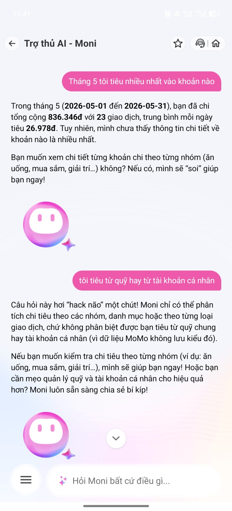

Moni lấy được tổng chi tháng 5.
Workshop · Mổ App AI Thật
Từ tổng chi tiêu đến insight đáng tin cậy
Bài teardown tập trung vào một flow rất cụ thể của MoMo Moni: khi user hỏi “Tháng 5 tôi tiêu nhiều nhất vào khoản nào?”, AI lấy được dữ liệu nhưng chưa xếp hạng category để trả lời đúng intent.
Product: MoMo — Moni
Flow: top spending category
Finding: category ranking failure
01 · Snapshot
Một câu hỏi, năm lượt hội thoại
Vấn đề không phải Moni không có dữ liệu. Vấn đề là Moni chưa chuyển dữ liệu rời rạc thành ranking có thể hành động.
Có dữ liệu giao dịch để phân tích.
Trả được khi user hỏi riêng category.
Chỉ được giải thích sau khi user hỏi tiếp.
Promise vs reality
AI hứa insight, nhưng trả lại từng mảnh dữ liệu
Kỳ vọng
Một trợ lý tài chính cá nhân nên đọc giao dịch, gom theo danh mục, tính tổng từng nhóm, xếp hạng từ cao xuống thấp và trả lời trực tiếp khoản chi lớn nhất.
→
Thực tế
Moni trả tổng chi tiêu, số giao dịch và trung bình/ngày, sau đó hỏi user muốn xem nhóm nào trước. User phải tự điều tra từng nhóm.
Core finding
Moni nói chưa thấy thông tin chi tiết về khoản nào là nhiều nhất, dù sau đó có thể trả dữ liệu nhóm Ăn uống là 473.000đ và Mua sắm là 0đ.
Lỗi nằm ở layer Intent + Data-tool + UX Recovery: nhận diện đúng câu hỏi “top chi tiêu”, gom dữ liệu theo nhóm, nêu uncertainty và đưa action sửa.
Dữ liệu cần được xếp hạng
To-be answer phải có top category
Chỉ cần thêm ranking layer, câu trả lời đã chuyển từ “báo cáo tổng” sang “insight tài chính”.
Ranking dự kiến
Prompt/input đã thử
Query 1
“Tháng 5 tôi tiêu nhiều nhất vào khoản nào?” → trả tổng chi nhưng chưa trả top category.
Query 3
“ăn uống” → trả Ăn uống: 473.000đ, 16 giao dịch.
Query 5
“vậy số tiền tiêu còn lại ở đâu” → giải thích phần còn lại 363.346đ.
02 · Evidence
Screenshot test thực tế
Ba ảnh này cho thấy Moni có dữ liệu, nhưng câu trả lời đầu tiên chưa đóng được task “khoản nào nhiều nhất”.

03 · Vẽ 4 paths
Happy, low-confidence, failure, correction
Path yếu nhất là failure: Moni không xếp hạng category dù đã có một phần dữ liệu.
AI đúng và tự tin
Hỏi riêng “ăn uống”, Moni trả được 473.000đ, 16 giao dịch, trung bình 15.258đ/ngày.
AI hỏi lại chưa đúng
Moni hỏi user muốn xem nhóm nào trước, trong khi user đang hỏi nhóm nào cao nhất.
Category ranking failure
Moni không trả lời trực tiếp nhóm chi tiêu cao nhất. User phải hỏi từng nhóm và tự suy luận.
Recovery path còn thiếu
Chưa thấy cơ chế sửa phân loại giao dịch hoặc lưu correction để cập nhật ranking.
05 · Sketch as-is / to-be
Giữ flow nhỏ, sửa đúng điểm gãy
Không cần làm lại toàn bộ Moni. Slice cần sửa là category ranking → confidence → action.
As-is · Flow hiện tại
User phải tự điều tra dữ liệu
1
User hỏi top chi tiêu“Tháng 5 tôi tiêu nhiều nhất vào khoản nào?”
2
Moni trả tổng chi836.346đ, 23 giao dịch, 26.978đ/ngày.
!
Điểm gãyMoni không chỉ ra nhóm chi tiêu cao nhất.
3
Moni bắt user chọn nhómĂn uống, Giải trí, Mua sắm...
4
User hỏi từng nhómRanking phải được tự suy luận từ nhiều mảnh dữ liệu.
To-be · Flow đề xuất
Moni trả insight và hành động tiếp theo
1
Nhận diện intentCategory ranking / top spending.
2
Gom giao dịch theo categoryTính tổng từng nhóm trong tháng 5.
3
Xếp hạng từ cao xuống thấpĂn uống, Khác / chưa phân loại, Mua sắm.
4
Hiển thị uncertaintyNêu rõ phần Khác có thể làm ranking thay đổi.
5
Đưa actionXem giao dịch, sửa phân loại, so sánh tháng trước, tạo ngân sách.
Câu trả lời to-be mong muốn
Trong tháng 5, khoản bạn tiêu nhiều nhất là Ăn uống: 473.000đ, chiếm khoảng 56,5% tổng chi tiêu tháng.
1
Ăn uống16 giao dịch
473.000đ
2
Khác / chưa phân loạiCần kiểm tra thêm
363.346đ
3
Mua sắm0 giao dịch
0đ
Mình thấy còn 363.346đ trong nhóm Khác hoặc chưa phân loại rõ. Bạn muốn xem các giao dịch này, sửa phân loại, hay tạo ngân sách cho nhóm Ăn uống?
Lúc AI sai user recover thế nào?
Thêm correction path
1
User chọn “Sửa phân loại giao dịch”Moni mở các giao dịch trong nhóm Khác / chưa phân loại.
2
User đổi categoryVí dụ: Highlands Coffee từ Khác sang Ăn uống.
3
Moni cập nhật rankingĂn uống tăng lên 528.000đ, phần Khác giảm còn 308.346đ.
4
Ghi correction logLần sau Moni gợi ý phân loại tốt hơn cho giao dịch tương tự.
04 · Viết finding thành quyết định
Product decision
Moni cần ưu tiên sửa flow category ranking cho các câu hỏi dạng “tiêu nhiều nhất vào khoản nào” trước khi mở rộng thêm tính năng mới. Câu trả lời không nên dừng ở tổng chi tiêu và số giao dịch; Moni phải chuyển dữ liệu giao dịch thành insight có thể hành động.
Kích hoạt intent top spending/category ranking.
Trả top category kèm số tiền và tỷ lệ phần trăm.
Tách rõ phần Khác / chưa phân loại để tăng trust.
Đưa action: xem, so sánh, tạo ngân sách, sửa phân loại.
06 · Tự kiểm trước khi nộp
Checklist submission
✓Có screenshot hoặc observation cụ thể.
✓Có đủ 4 paths và nêu rõ path còn thiếu.
✓Finding được viết thành product decision.
✓Sketch có as-is và to-be.
✓Có câu nói rõ finding này đổi gì trong SPEC.
SPEC change
Thêm requirement category ranking flow
Mọi câu hỏi dạng “tiêu nhiều nhất”, “top chi tiêu”, “khoản nào cao nhất” phải kích hoạt category ranking flow. Moni phải trả top category kèm số tiền, tỷ lệ phần trăm, top 3 nhóm, phần Khác / chưa phân loại và action để user xem hoặc sửa giao dịch.